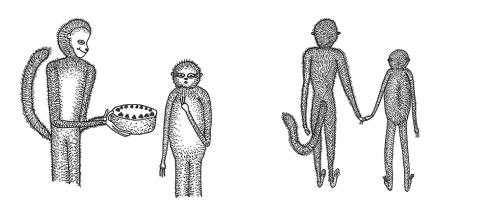

a little about me
Katrin Schacke ist selbstständige Grafikdesignerin, Artdirektorin, Illustratorin und Fotografin. Sie lebt und arbeitet in Offenbach am Main. Ihre Arbeitsfelder umfassen sämtliche Bereiche des klassischen Grafikdesigns, wie Buch- und Kataloggestaltung, Corporate Design, Editorial Design, Webdesign, sowie Informations- und Veranstaltungsdesign. Darüber hinaus gehört die Entwicklung von Bildkonzepten für dreidimensionale Illustrationen, sowie deren Umsetzung durch Setdesign, Installation und Fotografie, zu einem wichtigen Teil ihrer Aufgaben. Sie illustriert Interviewreihen, Kolumnen und Titelseiten für Magazine und Tageszeitungen. Für Verlage konzipiert und gestaltet sie Bücher.